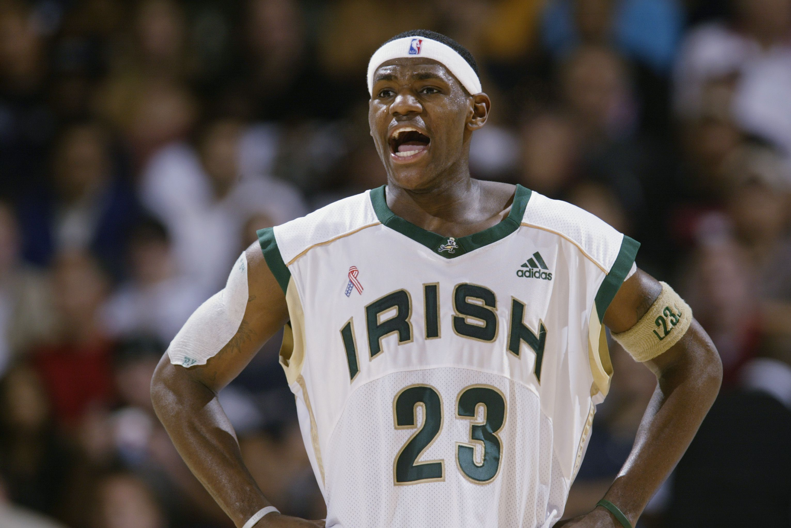
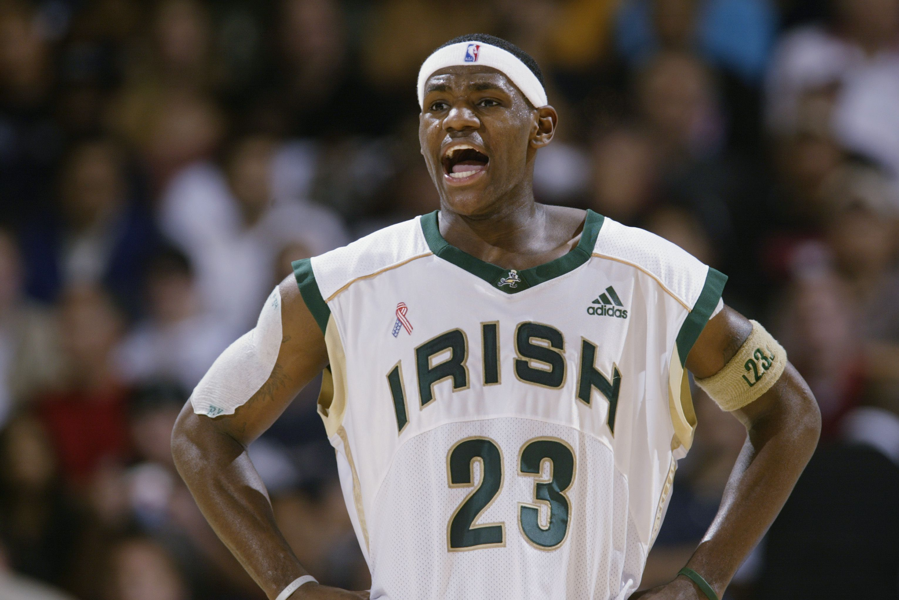

Les récompenses, records, distinctionde Lebron James
Lebron James est un joueur hors norme en ateste ses statistiques au long de sa carrière: 27,4 points , 8 rebonds, 7,6 passes décisicves et 1,6 interceptions en moyenne par match.


Les récompenses, records, distinctionde Lebron James
Lebron James est un joueur hors norme en ateste ses statistiques au long de sa carrière: 27,4 points , 8 rebonds, 7,6 passes décisicves et 1,6 interceptions en moyenne par match.
| Nom | Type | Saisons |
| 4x champions NBA | Collective | 2011-2012 2012-2013 2015-2016 2019-2020 |
| 4x MVP des finales NBA | Individuelle | 2011-2012 2012-2013 2015-2016 2019-2020 |
| 4x fois MVP de la saison régulière | Individuelle | 2008-2009 2009-2010 2011-2012 2012-2013 |
| 17x NBA all star | Individuelle | De 2005 à 2021 |
| 3x MVP du ALL Star Game | Individuelle | 2006 2008 2018 |
| 13x All NBA First Team | Individuelle | 2005-2006 de 2008 à 2018 2019-2020 |
| 3x All NBA Second Team | Individuelle | 2004-2005 2006-2007 2020-2021 |
| 5x All NBA First Defensive Team | Individuelle | De 2009 à 2013 |
| NBA Rookie Of The Year | Individuelle | 2003-2004 |
| All NBA First Rookie Team | Individuelle | 2003-2004 |
| NBA scoring champion | Individuelle | 2017-2018 |
| NBA assists leader | Individuelle | 2019-2020 |
| NBA 75th Anniversary Team | Individuelle | 2021-2022 |
| 4x Ap Athlete of The Year | Individuelle | 2013 2016 2018 2020 |
| 3x Sports Illustrated Sportperson of The Year |
Individuelle | 2012 2016 2020 |
| Time Athlete of the year | Individuelle | 2020 |
| USA basketball Male of The Year | Individuelle | 2012 |
| 2x National High School Player of the Year | Individuelle | 2001-2002 2002-2003 |
| McDonald's All American Game MVP | Individuelle | 2003 |
| 2x First-team Parade All-American | Individuelle | 2002 2003 |
| 3x Ohio MR.Basket of the Year | Individuelle | De 2001 à 2003 |
| 2x Champion Olympique | Collective | 2008 Beijing 2012 Londres |
| 1x médaillé de bronze au championnat du monde | Collective | 200- Japon |
| Champions des Amériques | Collectives | 2007 Las Vegas |
De plus grâce a son incroyable carrière il détient de nombreux record all time NBA et n'est pas lojn d'en glané d'autre
 

| Nom | Playoff ou Saison régulière | Lebron | Détenteur |
| Points marqués | Saison régulière | 3eme 36,038 |
Kareem Abdul-Jabar 38,387 |
| Panniers marqués | Saison régulière | 3eme 12,852 |
Kareem Abdul-Jabar 15,837 |
| Passes décisives | Saison régulière | 8eme 9,881 |
John Stockton 15,806 |
| Rebonds | Saison régulière | 42 eme 9,958 |
Wilt Chamberlain 23,924 |
| Minutes Jouées | Saison régulière | 7eme 49,891 |
Kareem Abdul-Jabar 57,446 |
| Points | Playoff | 1er 7,631 |
Lebron James |
| Paniers marqués | Playoff | 1er 2,671 |
Lebron James |
| Lancers francs marqués | Playoffs | 1er 1,749 |
Lebron James |
| 3 points marqués | Playoff | 2eme 432 |
Stephen Curry 690 |
| Rebonds | Playoff | 6eme 2,391 |
Bill Russel 4,104 |
| Passes décisives | Playoff | 2eme 1,919 |
Magic Johnson 2,346 |
| Interceptions | Playoff | 1er 454 |
Lebron James |
| Minutes joués | Playoff | 1er 11,035 |
|
| Matchs joués | Playoff | 1er 266 |
Lebron James |
| Apparence en finale NBA | Playoff | 3eme 10 |
Bill Russel 12 |
Il détient aussi de nombreux autres records: le meilleur passeur a son poste, meilleur scoreur, seul joueur a avoir compilé 36,00 points, 10,000 rebonds, 9,000
passes décisives... Et la liste est très très longue